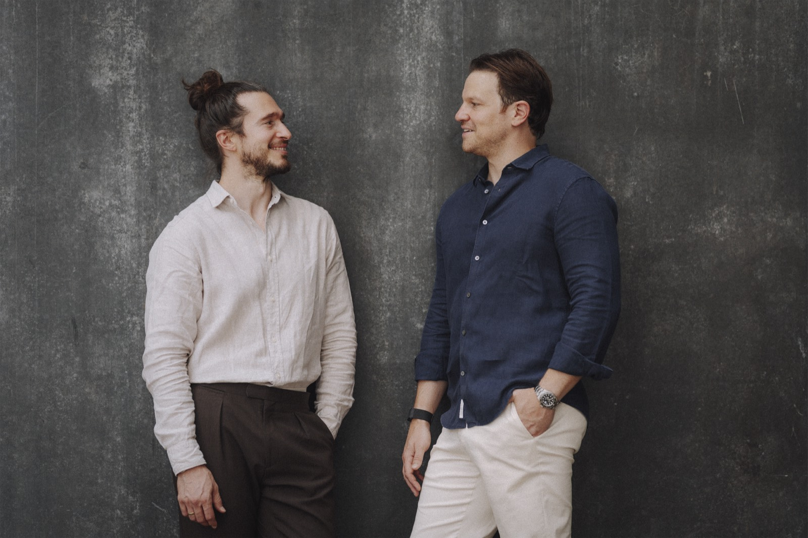
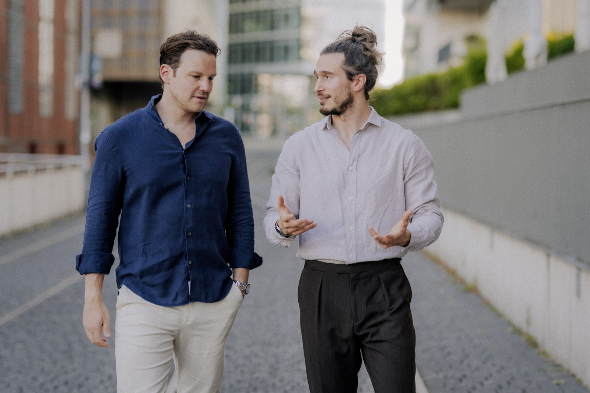

Prozessberatung · Digitalisierung · Verfahrensdokumentation
Papier raus. Prozesse rein.
Wir optimieren Ihre Buchhaltungsprozesse, machen sie digital und dokumentieren alles nach GoBD. Papierbelege dürfen danach weg, und Sie arbeiten gesetzeskonform. Die Verfahrensdokumentation ist inklusive, die Beratung über das BAFA förderfähig.

- 10+ Jahre Bankprozesse
- Top-25-Steuerkanzlei
- BAFA-anerkannter Berater
- PRINCE2® Practitioner
- Zertifizierter Lexware Coach
Diese Unternehmen vertrauen ProzessDoc
Ausgangslage
In vielen Betrieben läuft die Buchhaltung noch wie vor zwanzig Jahren. Nur mit mehr Tools.
Belege überall
Papier im Ordner, PDFs im Postfach, Downloads aus Portalen, Fotos auf dem Handy. Am Monatsende fehlt immer etwas.
Doppelte Arbeit
Scannen, abtippen, sortieren, zum Steuerbüro schicken. Vieles davon könnte automatisch laufen.
Unsicherheit
Darf das Papier weg? Wie wird die E-Rechnung aufbewahrt? Was will der Prüfer sehen? Niemand weiß es genau.
Vom Belegchaos zum dokumentierten Prozess.

Hauptleistung · BAFA-förderfähigBuchhaltung digitalisieren
Ist-Aufnahme, schlanker Soll-Prozess, digitale Belege, ersetzendes Scannen, Schulung. Am Ende steht die Verfahrensdokumentation nach GoBD, inklusive.
Mehr erfahren Kostenlos · 3 MinutenGoBD-Check
12 Fragen, Ihr Score und die offenen Flanken in Ihrer Buchhaltung.
Check starten FundamentProzessberatung
Abläufe aufnehmen, in BPMN modellieren, verschlanken und umsetzen.
Mehr erfahren GoBDVerfahrensdokumentation
Auch einzeln: Ihre Abläufe nach GoBD beschrieben, mit internem Kontrollsystem.
Mehr erfahren SoftwareLexware Office
Einführung und Coaching vom zertifizierten Lexware Coach.
Mehr erfahren BrancheBestattungsinstitute
Auslagen, Fremdleistungen und Vorsorge sauber getrennt, je Sterbefall nachvollziehbar.
Mehr erfahren Für SteuerkanzleienIhre Mandanten brauchen digitale Prozesse und eine Verfahrensdokumentation. Wir liefern beides, auf Wunsch unter Ihrem Namen.
Zusammenarbeit ansehenSo wird aus Papier ein Prozess.
Erstgespräch und Förder-Check
20 Minuten. Wir klären Umfang, Ziele und ob eine BAFA-Förderung der Beratung in Frage kommt. Danach erhalten Sie ein Festpreisangebot.
Ist-Aufnahme
Wir nehmen Ihren Belegweg auf, vom Posteingang bis zum Steuerbüro, und zeichnen ihn als Prozess.
Digitalisierung
Soll-Prozess, Software-Einrichtung, digitale Ablage, Scan-Routine und Schulung Ihres Teams.
Dokumentation und Übergabe
Verfahrensdokumentation nach GoBD mit internem Kontrollsystem. Danach darf das Papier weg.

„Über zehn Jahre habe ich Banksysteme mitentwickelt. Dort muss jeder Schritt sitzen. Ihre Buchhaltung ist auch ein Prozess, und der lässt sich schlank machen.“
Tobias Paulus, Gründer von ProzessDoc · Mehr über uns
Was Unternehmer über die Zusammenarbeit sagen.
„Als inhabergeführtes Bestattungsinstitut haben wir täglich mit sensiblen Unterlagen zu tun. ProzessDoc hat unsere Buchführungsprozesse sauber dokumentiert und uns gezeigt, wo wir nachbessern mussten.“
„Tobias hat mir geholfen, Proccatus von Anfang an richtig aufzubauen. Die Buchhaltungsprozesse waren vom ersten Tag an sauber dokumentiert.“
„Wir skalieren schnell und arbeiten mit vielen digitalen Tools. ProzessDoc hat das strukturiert und effizient umgesetzt, ohne dass wir den Betrieb unterbrechen mussten.“
Darf ich Papierbelege nach dem Digitalisieren wirklich wegwerfen?
In der Regel ja, wenn der Scanprozess beschrieben ist und eingehalten wird. Das nennt sich ersetzendes Scannen. Einige Belege, etwa bestimmte Urkunden, müssen im Original bleiben. Wie das genau funktioniert, erklärt unser Ratgeber zum ersetzenden Scannen.
Ist die Verfahrensdokumentation inklusive?
Ja. Wenn wir Ihre Buchhaltung digitalisieren, dokumentieren wir die neuen Abläufe direkt nach GoBD, inklusive internem Kontrollsystem.
Bieten Sie auch nur die Verfahrensdokumentation an?
Natürlich. Eine Verfahrensdokumentation ist für jedes Unternehmen Pflicht, das digital bucht. Wir dokumentieren Ihren Ist-Stand, also so, wie Sie heute arbeiten, damit Sie rechtlich sauber aufgestellt sind, auch ohne Prozessberatung. Inklusive internem Kontrollsystem und zum Festpreis. Mehr dazu unter Verfahrensdokumentation.
Wird die Beratung gefördert?
Prozess- und Digitalisierungsberatung kann über das BAFA-Programm zur Förderung von Unternehmensberatungen für KMU gefördert werden. Der Antrag muss vor Beratungsbeginn gestellt werden. Wir prüfen das im Erstgespräch.
Müssen wir dafür die Buchhaltungssoftware wechseln?
Meist nicht. Wir arbeiten mit dem, was Sie haben, etwa Lexware Office, sevdesk oder DATEV Unternehmen online, und richten es richtig ein. Nur wenn ein Tool nicht passt, empfehlen wir einen Wechsel.
Arbeiten Sie mit unserem Steuerbüro zusammen?
Ja. Die Schnittstelle zum Steuerbüro ist Teil jedes Projekts. Für Kanzleien bieten wir die Leistung auch im White-Label-Modell an.
20 Minuten, danach wissen Sie, wie Ihr Papier verschwindet.
Wir klären Umfang, Zeitrahmen, Festpreis und ob eine BAFA-Förderung möglich ist. Per Video oder Telefon, unverbindlich.
Wählen Sie direkt einen freien Termin.
Die Terminbuchung läuft über Calendly. Erst mit dem Klick werden Daten an Calendly übertragen, Anbieter mit Sitz in den USA. Mehr in der Datenschutzerklärung.
Lieber direkt? Calendly in neuem Tab öffnen · +49 2154 9543344